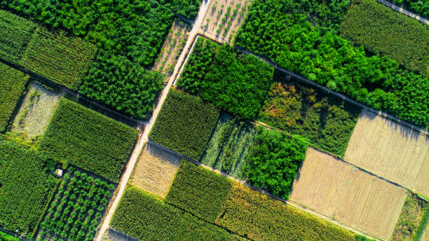

Earth’s Pulse
Live system status: All sensors operational in Doddaballapura Sector A.
Soil Moisture
45%
water_drop
Air Temp
28°C
device_thermostat
Optimal for Maize growth
Energy Avg
82%
bolt
Alerts
02
warning
Critical Irrigation

Doddaballapura
Partly Cloudy
28°C
Mon
rainy24°
Tue
wb_sunny29°
Wed
cloud26°
Thu
partly_cloudy_day28°
Fri
rainy23°

Sector 1-A
Sector 1-B
Sector 1-C
Sector 1-D
Sector 2-A
Sector 2-B (Active)
Sector 2-C
Sector 2-D
Sector 3-A
Sector 3-B
Sector 3-C
Sector 3-D
Scanning in Progress
Sector 2-B Drone Grid
Unit #4092
Altitude: 120m
Status: Deep Imaging
Sensor Alpha
Moisture: 42%
Temp: 28°C
Fleet Allocation
Active Units
12
Idle/Charging
04
Maintenance
02
Field Log
Just Now
Drone Scan Finished at Field A
High NDVI correlation detected.
42m ago
Irrigation Valve #04 Opened
Target: 400L / Sector B
2h ago
Soil Sample Uploaded
Nitrogen levels slightly low in NW.